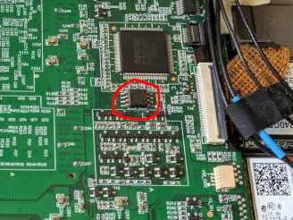

51NB X210
Extracting vendor EC firmware
EC firmware is included in the SPI image. To extract it, run:
dd bs=64K skip=32 count=1 if=bios.rom of=ec.bin
and ensure that you have a file that includes the string “Insyde Software Corp”.
Flashing instructions
This can be performed using the internal SPI controller, even when flashing
from stock firmware. Use flashrom -p internal and follow the appropriate
flashrom instructions to force it. Alternatively, external flashing has been
tested with Dediprog SF100 and SF600 and using a Beaglebone Black. The flash
is located on the upper side of the motherboard, below the keyboard
connector. It is circled in red here:

Flashing a subset of the ROM
If you want to flash coreboot without extracting firmware blobs, you can flash coreboot without overwriting those blobs. After building coreboot, create a layout file with the following content:
00000000:001fffff me
00200000:0020ffff ec
00210000:007fffff main
and run flashrom with the --layout rom.layout --image main arguments. This
will flash the main firmware without overwriting the existing EC or ME
firmware.
Working
All hardware features are believed to be working, although the SD reader is untested. Note that certain hotkeys don’t work (including the ThinkVantage button) - this is a limitation of the EC firmware, and these keys also generate no events under the stock vendor firmware.